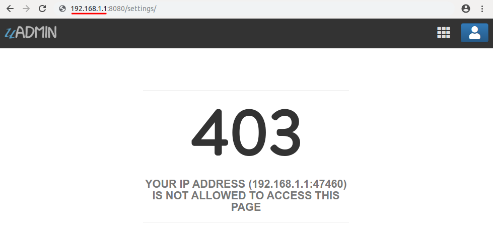
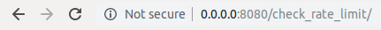
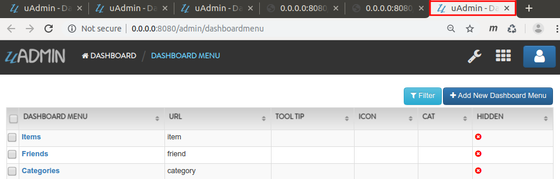
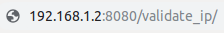

Network Functions¶
In this section, we will cover the following functions in-depth listed below:
uadmin.AllowedHosts¶
// Type: string
var AllowedHosts = "0.0.0.0,127.0.0.1,localhost,::1"
AllowedHosts is a comma seprated list of allowed hosts for the server to work. The default value if only for development and production domain should be added before deployment.
uadmin.AllowedIPs¶
// Type: string
var AllowedIPs = "*"
AllowedIPs is a list of allowed IPs to access uAdmin interface in one of the following formats:
“*” = Allow all
“” = Allow none
“192.168.1.1” = Only allow this IP
“192.168.1.0/24” = Allow all IPs from 192.168.1.1 to 192.168.1.254
You can also create a list of the above formats using comma to separate them.
For example: “192.168.1.1, 192.168.1.2, 192.168.0.0/24”
To assign a value within an application, visit Allowed IPs page for an example.
To assign a value in the code, follow this approach:
Go to the main.go and assign your IP address connected on your PC in the AllowedIPs function.
func main() {
// NOTE: This code works only if database does not exist yet.
uadmin.AllowedIPs = "192.168.1.1"
// ----- IF YOU RUN YOUR APPLICATION AGAIN, DO THIS BELOW -----
// Assign the Allowed IP value to "192.168.1.1"
setting := uadmin.Setting{}
uadmin.Get(&setting, "code = ?", "uAdmin.AllowedIPs")
setting.ParseFormValue([]string{"192.168.1.1"})
setting.Save()
}
Run your application and see what happens.

Quiz:
uadmin.BindIP¶
// Type: string
var BindIP = ""
BindIP is the IP the application listens to.
Used in the tutorial:
Go to the main.go. Connect to the server using a loopback IP address (127.x.x.x). Let’s say 127.0.0.2.
func main() {
// Some codes
uadmin.BindIP = "127.0.0.2" // <-- place it here
}
If you run your code,
[ OK ] Initializing DB: [13/13]
[ OK ] Synching System Settings: [51/51]
[ OK ] Server Started: http://127.0.0.2:8080
___ __ _
__ __/ | ____/ /___ ___ (_)___
/ / / / /| |/ __ / __ __ \/ / __ \
/ /_/ / ___ / /_/ / / / / / / / / / /
\__,_/_/ |_\__,_/_/ /_/ /_/_/_/ /_/
In the Server Started, it will redirect you to the IP address of 127.0.0.2.
But if you connect to other private IP addresses, it will not work as shown below (User connects to 127.0.0.3).

Quiz:
uadmin.BlockedIPs¶
// Type: string
var BlockedIPs = ""
BlockedIPs is a list of blocked IPs from accessing uAdmin interface in one of the following formats:
“*” = Block all
“” = Block none
“192.168.1.1” = Only block this IP
“192.168.1.0/24” = Block all IPs from 192.168.1.1 to 192.168.1.254
You can also create a list of the above formats using comma to separate them.
For example: “192.168.1.1, 192.168.1.2, 192.168.0.0/24”
To assign a value within an application, visit Blocked IPs page for an example.
To assign a value in the code, follow this approach:
Go to the main.go and assign your IP address connected on your PC in the BlockedIPs function.
func main() {
// NOTE: This code works only if database does not exist yet.
uadmin.BlockedIPs = "192.168.1.1"
// ----- IF YOU RUN YOUR APPLICATION AGAIN, DO THIS BELOW -----
// Assign the Blocked IP value to "192.168.1.1"
setting := uadmin.Setting{}
uadmin.Get(&setting, "code = ?", "uAdmin.BlockedIPs")
setting.ParseFormValue([]string{"192.168.1.1"})
setting.Save()
}
Run your application and see what happens.
Quiz:
uadmin.CheckRateLimit¶
func CheckRateLimit(r *http.Request) bool
CheckRateLimit checks if the request has remaining quota or not. If it returns false, the IP in the request has exceeded their quota.
Before we proceed to the example, read Tutorial Part 9 - Introduction to API to familiarize how API works in uAdmin.
Create a file named check_rate_limit.go inside the api folder with the following codes below:
package api
import (
"net/http"
"strings"
"github.com/uadmin/uadmin"
)
// CheckRateLimitHandler !
func CheckRateLimitHandler(w http.ResponseWriter, r *http.Request) {
// r.URL.Path creates a new path called "/check_rate_limit/"
r.URL.Path = strings.TrimPrefix(r.URL.Path, "/check_rate_limit")
r.URL.Path = strings.TrimSuffix(r.URL.Path, "/")
// Call the function to check the status of the rate limit
checkRateLimit := uadmin.CheckRateLimit(r)
// Print the result
uadmin.Trail(uadmin.DEBUG, "Rate Limit: %t", checkRateLimit)
}
Establish a connection in the main.go to the API by using http.HandleFunc. It should be placed after the uadmin.Register and before the StartServer.
func main() {
// Some codes
// CheckRateLimitHandler
http.HandleFunc("/check_rate_limit/", uadmin.Handler(api.CheckRateLimitHandler))
}
api is the folder name while CheckRateLimitHandler is the name of the function inside check_rate_limit.go.
Run your application and go to the check_rate_limit URL path in the address bar using your IP address (e.g. 0.0.0.0:8080/check_rate_limit).
This will not display anything in the webpage but a white screen. Go to your terminal to see the result.
[ DEBUG ] Rate Limit: true
It means the website is working properly. Now go to admin URL path in the address bar (e.g. 0.0.0.0:8080/admin). From uAdmin dashboard, click on “SETTINGS”.

Change the value of either the Rate Limit or Rate Limit Burst to 0.

Result
Slow down. You are going too fast!
Now go to check_rate_limit URL path in the address bar (e.g. 0.0.0.0:8080/check_rate_limit).
This will not display anything in the webpage but a white screen. Go to your terminal to see the result.
[ DEBUG ] Rate Limit: false
It means the website is crashing. In order to work, either delete the uadmin.db file on your project folder or apply the method shown in uadmin.RateLimit or uadmin.RateLimitBurst where the value is higher than zero.
Quiz:
uadmin.GetRemoteIP¶
func GetRemoteIP(r *http.Request) string
GetRemoteIP is a function that returns the IP for a remote user from a request.
uadmin.Port¶
// Type: int
var Port = 8080
Port is the port used for http or https server.
To assign a value within an application, visit Port page for an example.
To assign a value in the code, follow this approach:
Go to the main.go in your Todo list project and apply 8000 as a port number.
func main() {
// NOTE: This code works only if database does not exist yet.
uadmin.Port = 8000
// ----- IF YOU RUN YOUR APPLICATION AGAIN, DO THIS BELOW -----
// Assign the Port value to 8000
setting := uadmin.Setting{}
uadmin.Get(&setting, "code = ?", "uAdmin.Port")
setting.ParseFormValue([]string{"8000"})
setting.Save()
}
If you run your code,
[ OK ] Initializing DB: [13/13]
[ OK ] Synching System Settings: [51/51]
[ OK ] Server Started: http://0.0.0.0:8000
___ __ _
__ __/ | ____/ /___ ___ (_)___
/ / / / /| |/ __ / __ __ \/ / __ \
/ /_/ / ___ / /_/ / / / / / / / / / /
\__,_/_/ |_\__,_/_/ /_/ /_/_/_/ /_/
In the Server Started, it will redirect you to port number 8000.
Quiz:
uadmin.RateLimit¶
var RateLimit int64 = 3
RateLimit is the maximum number of requests/second for any unique IP.
To assign a value within an application, visit Rate Limit page for an example.
To assign a value in the code, follow this approach:
Go to the main.go and apply the following codes below:
func main() {
// NOTE: This code works only if database does not exist yet.
uadmin.RateLimit = 1
// ----- IF YOU RUN YOUR APPLICATION AGAIN, DO THIS BELOW -----
// Assign the Rate Limit value to 1
setting := uadmin.Setting{}
uadmin.Get(&setting, "code = ?", "uAdmin.RateLimit")
setting.ParseFormValue([]string{"1"})
setting.Save()
}
Run your application. From uAdmin dashboard, hold the Ctrl Key on your keyboard then click any dashboard menu in the form really fast to add in a new tab and see what happens.

The title bar name looks different in the last two tabs. Click any of them to see the result.

The website is crashed as expected. In fact that our rate limit is 1, it might take a long time to bring the website back to normal. To increase the recovery rate, adjust the rate limit to a higher value (e.g. 100).
// Assign the Rate Limit value to 100
setting := uadmin.Setting{}
uadmin.Get(&setting, "code = ?", "uAdmin.RateLimit")
setting.ParseFormValue([]string{"100"})
setting.Save()
Run your application again and do the same process as shown above. Afterwards, click any button in the form and you will see that the website is back to normal much faster.
Quiz:
uadmin.RateLimitBurst¶
var RateLimitBurst int64 = 3
RateLimitBurst is the maximum number of requests for an idle user.
To assign a value within an application, visit Rate Limit Burst page for an example.
To assign a value in the code, follow this approach:
Go to the main.go and apply the following codes below:
func main() {
// NOTE: This code works only if database does not exist yet.
uadmin.RateLimitBurst = 3
// ----- IF YOU RUN YOUR APPLICATION AGAIN, DO THIS BELOW -----
// Assign the Rate Limit Burst value to 3
setting := uadmin.Setting{}
uadmin.Get(&setting, "code = ?", "uAdmin.RateLimitBurst")
setting.ParseFormValue([]string{"3"})
setting.Save()
}
Run your application. From uAdmin dashboard, hold the Ctrl Key on your keyboard then click any dashboard menu in the form really fast to add in a new tab and see what happens.
The title bar name looks different in the last two tabs. Click any of them to see the result.
The website is crashed because our request exceeds the limit that we have assigned.
Quiz:
uadmin.RestrictSessionIP¶
// Type: bool
var RestrictSessionIP = false
RestrictSessionIP is to block access of a user if their IP changes from their original IP during login.
To assign a value within an application, visit Restrict Session IP page for an example.
To assign a value in the code, follow this approach:
Example:
package main
import (
"github.com/uadmin/uadmin"
)
func main() {
// NOTE: This code works only if database does not exist yet.
// Block access of a user
uadmin.RestrictSessionIP = true
// Allow access of a user
uadmin.RestrictSessionIP = false
// ----- IF YOU RUN YOUR APPLICATION AGAIN, DO THIS BELOW -----
// Block access of a user
setting := uadmin.Setting{}
uadmin.Get(&setting, "code = ?", "uAdmin.RestrictSessionIP")
setting.ParseFormValue([]string{"true"})
setting.Save()
// Allow access of a user
setting := uadmin.Setting{}
uadmin.Get(&setting, "code = ?", "uAdmin.RestrictSessionIP")
setting.ParseFormValue([]string{"false"})
setting.Save()
}
Quiz:
uadmin.ValidateIP¶
func ValidateIP(r *http.Request, allow string, block string) bool
ValidateIP is a function to check if the IP in the request is allowed in the allowed based on allowed and block strings.
Before we proceed to the example, read Tutorial Part 9 - Introduction to API to familiarize how API works in uAdmin.
Create a file named validation_ip.go inside the api folder with the following codes below:
package api
import (
"net/http"
"strings"
"github.com/uadmin/uadmin"
)
// ValidateAPIHandler !
func ValidateAPIHandler(w http.ResponseWriter, r *http.Request) {
// r.URL.Path creates a new path called "/validate_ip"
r.URL.Path = strings.TrimPrefix(r.URL.Path, "/validate_ip")
r.URL.Path = strings.TrimSuffix(r.URL.Path, "/")
// Allowed IP - 192.168.1.1 (Your IP address)
// Blocked IP - 192.168.1.2 (IP that was binded from other PC)
validateIP := uadmin.ValidateIP(r, "192.168.1.1", "192.168.1.2")
// Print the result
uadmin.Trail(uadmin.DEBUG, "Validate IP: %t", validateIP)
}
Establish a connection in the main.go to the API by using http.HandleFunc. It should be placed after the uadmin.Register and before the StartServer.
func main() {
// Some codes
// ValidateAPIHandler
http.HandleFunc("/validate_ip/", uadmin.Handler(api.ValidateAPIHandler))
}
api is the folder name while ValidateAPIHandler is the name of the function inside validation_ip.go.
Run your application and go to the validate_ip URL path in the address bar using your IP address (e.g. 192.168.1.1:8080/validate_ip).

This will not display anything in the webpage but a white screen. Go to your terminal to see the result.
[ DEBUG ] Validate IP: true
Now go to the validate_ip URL path in the address bar using the binded IP (e.g. 192.168.1.2:8080/validate_ip). Make sure that the IP from other PC is binded to your computer. Otherwise, it will not work.
This will not display anything in the webpage but a white screen. Go to your terminal to see the result.
[ DEBUG ] Validate IP: false
Quiz: